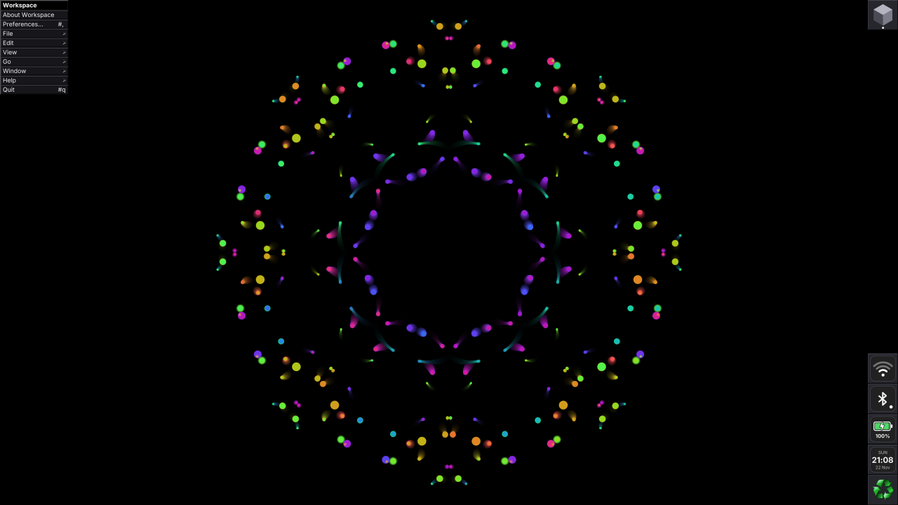

From the NextBSD project
NextBSD Desktop
NextBSD’s own OS-specific desktop: WindowServer, Workspace and the Dock, with Software, Settings, Update and Installer. Its native apps draw straight to WindowServer; X11 apps run alongside them through XLibre.app, similar to an XQuartz model.
- Intel / AMD (amd64)ISO
- ARM (arm64)ISO
- Raspberry Pi 5 / 500 / 500+Image
Already running NextBSD Server?
pkg install NextBSD-desktop, then restart.